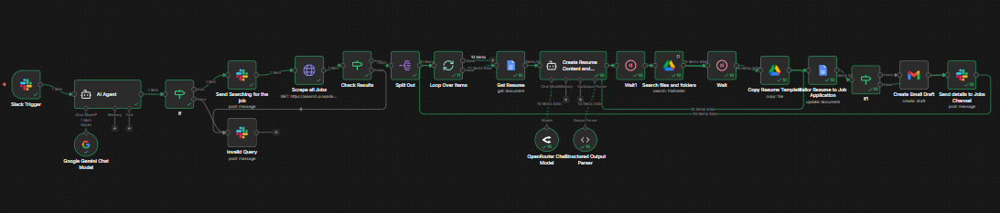

Things I've built.
A selection of automations, integrations, and systems across different tools and industries.

n8n: FB Chat Agent
AI-powered Facebook Messenger agent with knowledge base, Groq LLM, and automated customer reply logic.

Invoice Follow-Up System
Daily invoice audit that calculates overdue tiers and fires tiered Gmail reminders — with a webhook to mark invoices as paid automatically.

Automated Job Scraper Pipeline
Slack-triggered agent scrapes job boards, loops through listings, generates tailored resumes using Gemini + structured output, and sends application drafts via Gmail.

Automated Financial Reporting from Project Tasks
Asana task completions trigger Xero API calls, log to Google Sheets, and auto-generate a formatted CSV report.

Smart Form-to-Spreadsheet Lead Filter
Google Forms responses are formatted, filtered through multi-condition logic, and routed into the correct Sheets tabs automatically.

Your Personal AI Chief of Staff on Telegram
Voice or text triggers a parent AI agent that delegates to sub-agents — Email, Calendar, Contacts, and Content Creator.

Multi-Tool AI Agent with Live Data Access
AI agent with real-time web search, weather data, and memory — powered by OpenRouter, Perplexity, Tavily, and OpenWeatherMap.

Lead Generation & Enrichment Pipeline
Scrapes Google Maps for leads, finds emails via AnyMail Finder, generates AI icebreakers, and appends enriched rows to Google Sheets.

AI Content Writing Pipeline
Schedule-triggered multi-agent pipeline — Planning Agent researches, Section Writer drafts, Editor Agent polishes, then delivers a Gmail draft automatically.
swipe Scroll to explore